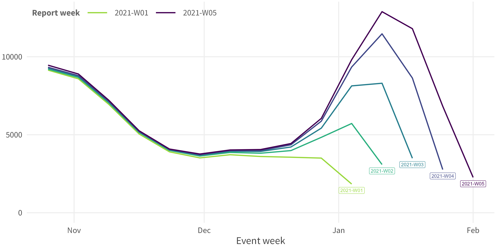
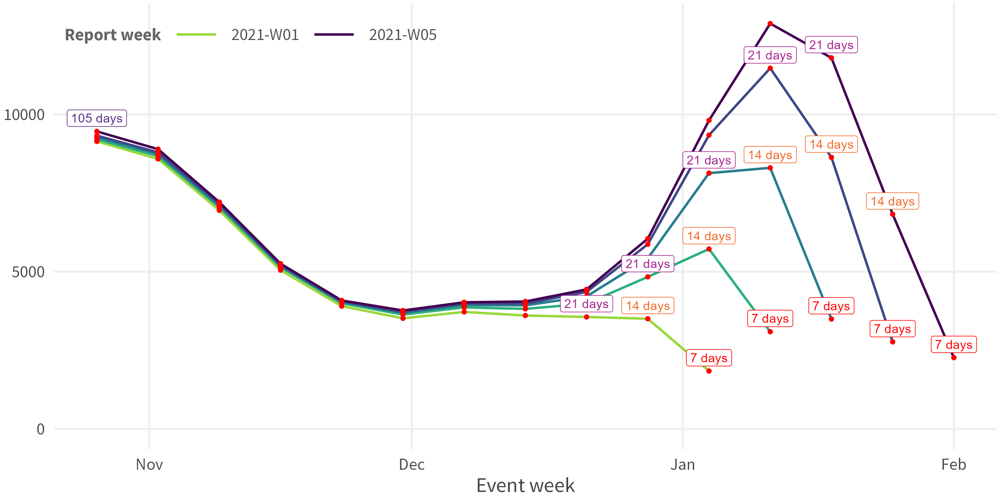
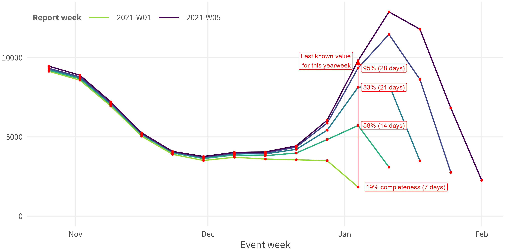
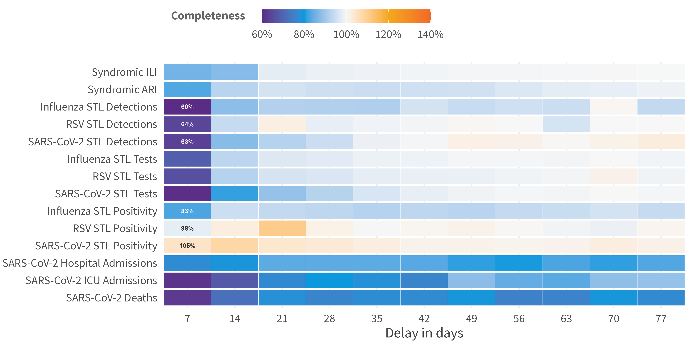
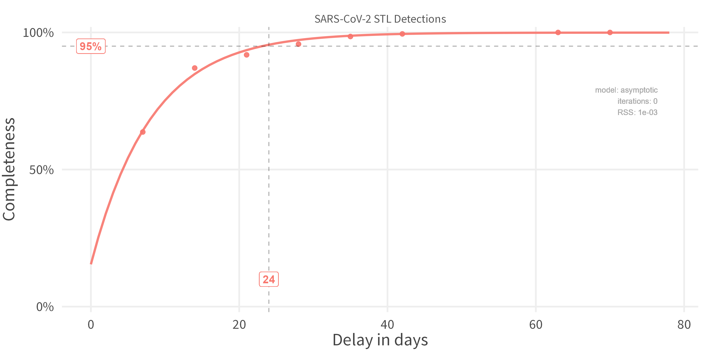
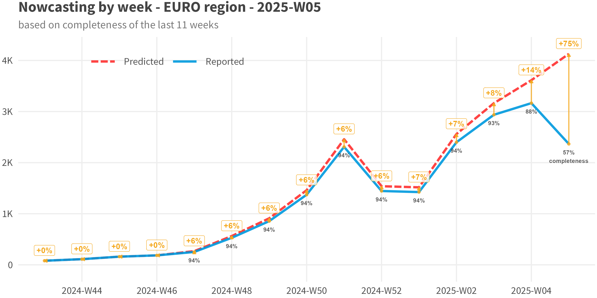

R package for nowcasting with non-cumulative chain-ladder method.
- 1 main nowcast function
-
nowcast_cl()returns object with all intermediary results
-
- 4 plots
-
plot_nc_input(option = "triangle")/plot(which = "data", option = "triangle") -
plot_nc_input(option = "millipede")/plot(which = "data", option = "millipede") -
plot_delays()/plot(which = "delays") -
plot_nowcast()/plot(which = "results")
-
- 3 utility functions
-
calculate_retro_score(): Calculate retro-scores for all groups -
rm_repeated_values(): Remove duplicated reported values in reporting matrix -
fill_future_reported_values(): Fill future reported values with last known values
-
Installation
pak::pak("whocov/nowcastr")Data Requirements
Dataset with at least 2 date columns and a value column. The dataset can also have multiple group-by columns for batch processing.
Note that the delays (difference between the 2 dates) should have constant intervals, i.e., multiples of 1 day or 7 days.
print(nowcast_demo)
# # A tibble: 1,624 × 4
# value date_occurrence date_report group
# <dbl> <date> <date> <chr>
# 1 251563 2024-12-16 2025-05-26 Syndromic ARI
# 2 219818 2024-12-23 2025-05-26 Syndromic ARI
# 3 219815 2024-12-23 2025-06-02 Syndromic ARI
# 4 253451 2024-12-30 2025-05-26 Syndromic ARI
# 5 253454 2024-12-30 2025-06-09 Syndromic ARI
# 6 311660 2025-01-06 2025-05-26 Syndromic ARI
# 7 311666 2025-01-06 2025-06-02 Syndromic ARI
# 8 311654 2025-01-06 2025-06-09 Syndromic ARI
# 9 311657 2025-01-06 2025-06-16 Syndromic ARI
# 10 313798 2025-01-13 2025-05-26 Syndromic ARI
# # ℹ 1,614 more rowsUsage
Data Preparation
## Visualize input data
nowcast_demo %>%
plot_nc_input(
option = "triangle",
col_date_occurrence = date_occurrence,
col_date_reporting = date_report,
col_value = value,
group_cols = "group"
)
## Fill the missing (optional)
data <-
nowcast_demo %>%
fill_future_reported_values(
col_date_occurrence = date_occurrence,
col_date_reporting = date_report,
col_value = value,
group_cols = "group",
max_delay = "auto"
)
## Visualize the change
data %>%
plot_nc_input(
option = "triangle",
col_date_occurrence = date_occurrence,
col_date_reporting = date_report,
col_value = value,
group_cols = "group"
)Nowcast
nowcast <- data %>%
nowcast_cl(
col_date_occurrence = date_occurrence,
col_date_reporting = date_report,
col_value = value,
group_cols = "group",
time_units = "weeks",
do_model_fitting = TRUE,
)Output Object
nowcast_cl() returns an S7 object of class nowcast_results with the following properties:
| Property | Type | Description |
|---|---|---|
name |
character | Timestamp identifier for the run |
params |
list | Parameters used for nowcasting (unevaluated call) |
time_start |
POSIXct | Sys time when function started |
time_end |
POSIXct | Sys time when function ended |
n_groups |
numeric | Number of groups processed |
max_delay |
numeric | Maximum delay used |
data |
data.frame | Original input data (required columns only) |
completeness |
data.frame | Input data with delays and completeness columns |
delays |
data.frame | Aggregated completeness per delay (+ modelled column if fitted) |
models |
data.frame | Fitted models (empty if do_model_fitting = FALSE) |
results |
data.frame | Final nowcasting predictions |
Access properties with $:
nowcast$delays
nowcast$results
nowcast$paramsAvailable methods: - print(nowcast) - Summary of nowcast results - plot(nowcast, which = "delays") - Delay distribution - plot(nowcast, which = "results") - Nowcast time series
Methods
Summary:
-
Input Data: Ensure three core columns:
observed_value/date_of_reporting/date_of_occurrence(e.g. date_of_event / date_of_onset)
-
Calculate the
reporting_delay(=date_of_reporting-date_of_occurrence)
-
Compute the
completeness(=observed_value/true_value(approximated bylast_reported_value))
-
Aggregate the
avg_completenessfor eachreporting_delay
-
Optional: Fit a curve through that

-
Apply Nowcast:
nowcast=observed_value/avg_completeness